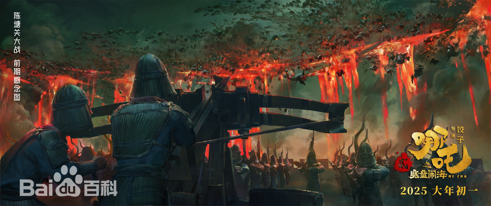
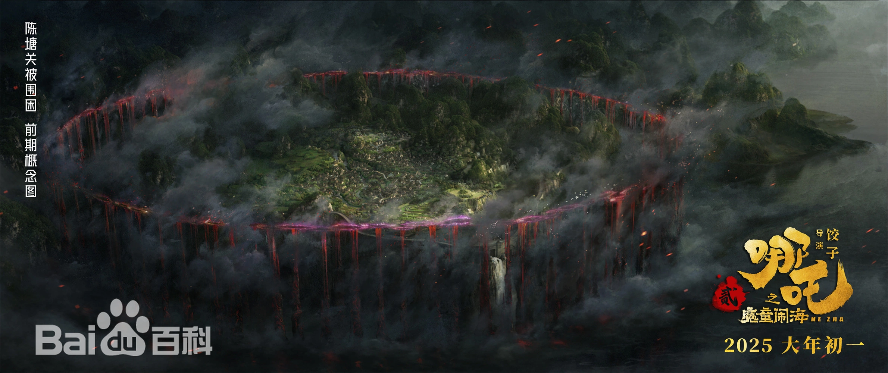
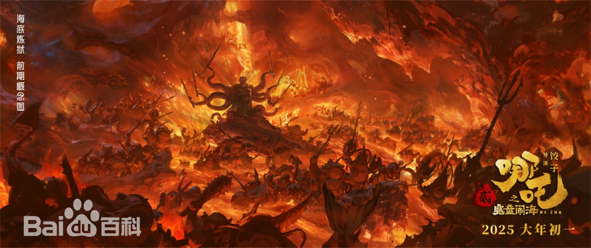

《哪吒之魔童闹海》是由可可豆动画、光线彩条屋影业出品，饺子编剧并执导，吕艳婷、囧森瑟夫、瀚墨、陈浩、绿绮担任主要配音的动画电影。该片于2025年1月29日在中国大陆上映，2月14日在北美院线全面上映。
该片是《哪吒》系列电影的第二部，讲述了天劫之后，哪吒、敖丙的灵魂保住了，但很快会魂飞魄散。太乙真人打算用七色宝莲给二人重塑肉身，但是在重塑肉身的过程中却遇到重重困难，哪吒、敖丙的命运将迎来更多的挑战。
2025年1月11日，该片获得《2024微博之夜》“微博最受期待春节档电影”荣誉 ；2月6日，该片登顶中国影史票房榜；2月7日，该片成为全球单一市场票房榜第一名，为中国影史首部百亿元票房影片，进入全球动画电影票房榜前2名。截至2025年2月13日14时43分，该片观影人次破2亿，成为中国影史首部观影人次破2亿电影，已打破了几十项中国影史纪录。截至2025年2月17日据网络平台数据，电影《哪吒之魔童闹海》总票房（包含港澳台及海外票房）已超过《侏罗纪世界》，排名全球影史票房榜第9。
| 影视信息 | |
|---|---|
| 中文：哪吒之魔童闹海 | 英文：Ne Zha 2 |
| 二次元动漫 | 剧情 / 喜剧 / 动画 / 奇幻 |
| 导演 | 饺子 |

- 
- 
- 